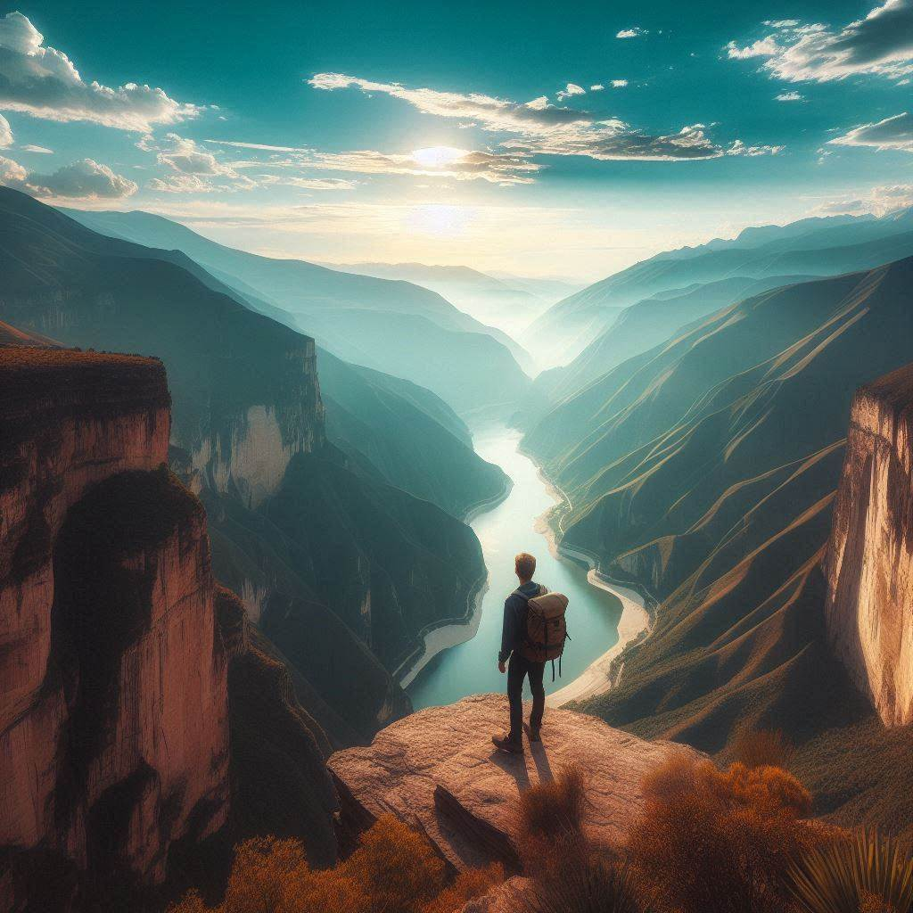
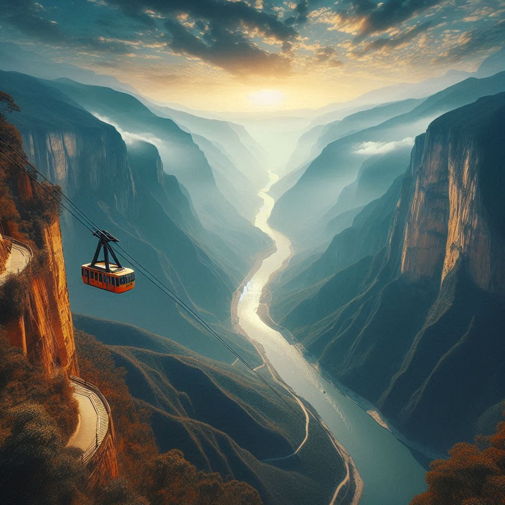

| Actividad | Imagen | Descripción | Precio |
|---|---|---|---|
| Parapente | Vuela sobre el majestuoso cañón y disfruta de una vista única desde las alturas. Una experiencia inolvidable para los amantes de la adrenalina. | $100,000 | |
| Senderismo |  | Explora los senderos que recorren el cañón y descubre la biodiversidad de la región. Una actividad perfecta para quienes disfrutan de la naturaleza. | $50,000 |
| Teleférico |  | Disfruta de un recorrido en teleférico y admira el paisaje del cañón desde una perspectiva espectacular. Ideal para toda la familia. | $70,000 |

Turismo Chicamocha